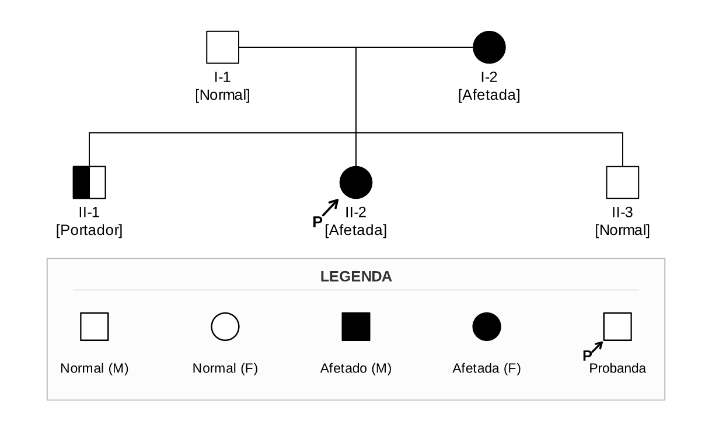
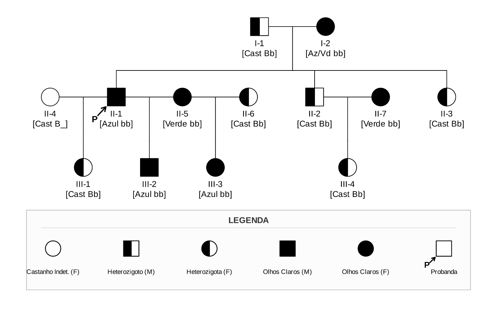
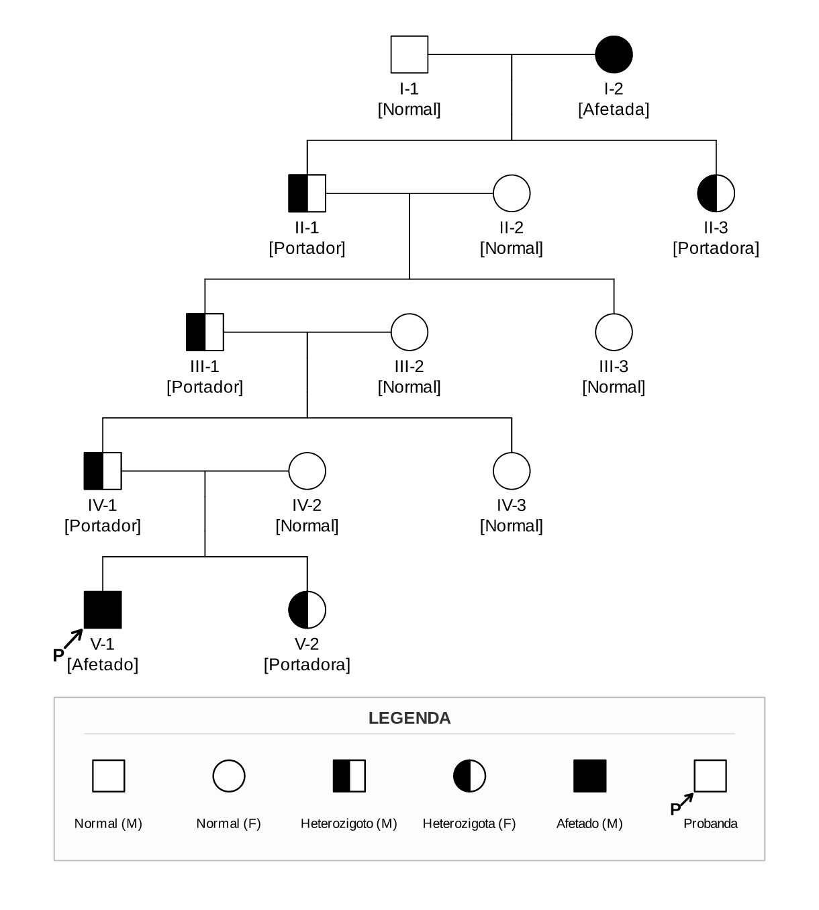

MOTOR PRINCIPAL RECOMENDADO
Motor pedtools — Heredogramas Clínicos
O motor pedtools é o padrão moderno do Joaju para produção de árvores genealógicas clínicas em conformidade com as diretrizes da National Society of Genetic Counselors (NSGC). Ele implementa auto-dimensionamento vertical proporcional ao número de gerações, representação de heterozigotos divididos ao meio (half-fill), probanda com folga geométrica e legendas em polegadas físicas.
Dica de Uso: Utilize blocos com delimitador
```pedtools em suas notas Markdown no Obsidian. O Joaju compilará o gráfico vetorial SVG e o incluirá no PDF Typst automaticamente.
📋 Estrutura da Tabela de Entrada (CSV)
| Coluna | Sinônimos | Obrigatória | Descrição |
|---|---|---|---|
id |
- | Sim | Identificador unívoco do indivíduo (número ou código textual). |
pai |
fid, dadid |
Sim | ID do pai biológico (0 ou vazio para fundadores). |
mae |
mid, momid |
Sim | ID da mãe biológica (0 ou vazio para fundadores). |
sex |
sexo |
Sim | Sexo: M/1 (Macho, quadrado), F/2 (Fêmea, círculo), 3/? (Losango). |
fenotipo |
aff, affected |
Não | Condição clínica: wt (vazado), het/carrier (dividido ao meio), afetado/hom (sólido), ?/suspeita (interrogação). |
proband |
probanda |
Não | 1 ou sim para desenhar a seta diagnóstica ↗ P apontando para o canto inferior esquerdo com respiro. |
label |
rotulo |
Não | Texto exibido abaixo do símbolo. Quebra em duas linhas automaticamente ao encontrar colchetes (ex.: II-1 [Azul bb]). |
status |
falecido |
Não | 1 ou falecido para adicionar a barra diagonal de óbito. |
⚙️ Diretivas de Configuração (%%)
Diretivas iniciadas por %% na primeira linha do bloco controlam o layout e são repassadas diretamente ao motor R:
| Diretiva / Parâmetro | Tipo | Padrão | Descrição |
|---|---|---|---|
layout.width / width |
String | 85% |
Largura relativa do heredograma no PDF gerado. |
layout.max_width / max-width |
String | 720pt |
Largura máxima em pontos para não extrapolar a mancha da página. |
cex |
Numérico | 0.85 |
Fator de escala da fonte dos rótulos sob cada nó da árvore. |
symbolsize |
Numérico | 1.3 |
Fator de escala do tamanho dos quadrados, círculos e losangos. |
foldLabs |
Booleano | FALSE |
Quebra automática de rótulos do pedtools (desativada para preservar quebra manual do Joaju). |
plot_width |
Numérico | Auto | Largura forçada do SVG em polegadas (sobrescreve auto-cálculo de colunas). |
plot_height |
Numérico | Auto | Altura forçada do SVG em polegadas (sobrescreve proporção vertical por gerações). |
margins |
Vetor | c(9.0, 0.8, 0.8, 0.8) |
Margens em linhas de texto no R (inferior acomoda a legenda). |
legend |
Vetor R | NULL |
Lista de rótulos da legenda inferior: c("Item 1", "Item 2"). |
legend.type |
Vetor R | NULL |
Tipos dos símbolos da legenda: sq_empty, circ_empty, sq_half, circ_half, sq_solid, circ_solid, suspect, proband. |
src / file |
String | - | Carrega os dados genealógicos a partir de um arquivo CSV anexo. |
🧪 Exemplos Práticos
1. Duas Gerações (G2) com Segregação e Probanda
Markdown (pedtools G2)
Resultado da Renderização

```pedtools
%% layout.width=95% layout.max_width=720pt cex=0.85 symbolsize=1.25 legend=c("Normal (M)","Normal (F)","Afetado (M)","Afetada (F)","Probanda") legend.type=c("sq_empty","circ_empty","sq_solid","circ_solid","proband")
id,pai,mae,sex,fenotipo,proband,label
1,0,0,M,wt,0,I-1 [Normal]
2,0,0,F,afetado,0,I-2 [Afetada]
3,1,2,M,het,0,II-1 [Portador]
4,1,2,F,afetado,1,II-2 [Afetada]
5,1,2,M,wt,0,II-3 [Normal]
```2. Três Gerações (G3) com Múltiplos Casamentos e Heterozigotos
Markdown (pedtools G3)
Resultado da Renderização

```pedtools
%% layout.width=98% layout.max_width=750pt cex=0.85 symbolsize=1.25 legend=c("Castanho Indet. (F)","Heterozigoto (M)","Heterozigota (F)","Olhos Claros (M)","Olhos Claros (F)","Probanda") legend.type=c("circ_empty","sq_half","circ_half","sq_solid","circ_solid","proband")
id,pai,mae,sex,fenotipo,proband,label
1,0,0,M,het,0,I-1 [Cast Bb]
2,0,0,F,afetado,0,I-2 [Az/Vd bb]
3,1,2,M,afetado,1,II-1 [Azul bb]
4,1,2,M,het,0,II-2 [Cast Bb]
5,1,2,F,het,0,II-3 [Cast Bb]
6,0,0,F,wt,0,II-4 [Cast B_]
7,0,0,F,afetado,0,II-5 [Verde bb]
8,0,0,F,het,0,II-6 [Cast Bb]
9,0,0,F,afetado,0,II-7 [Verde bb]
10,3,6,F,het,0,III-1 [Cast Bb]
11,3,7,M,afetado,0,III-2 [Azul bb]
12,3,8,F,afetado,0,III-3 [Azul bb]
13,4,9,F,het,0,III-4 [Cast Bb]
```3. Cinco Gerações (G5) Profundas com Escala Compacta
Markdown (pedtools G5)
Resultado da Renderização

```pedtools
%% layout.width=95% layout.max_width=720pt cex=0.85 symbolsize=1.25 legend=c("Normal (M)","Normal (F)","Heterozigoto (M)","Heterozigota (F)","Afetado (M)","Probanda") legend.type=c("sq_empty","circ_empty","sq_half","circ_half","sq_solid","proband")
id,pai,mae,sex,fenotipo,proband,label
1,0,0,M,wt,0,I-1 [Normal]
2,0,0,F,afetado,0,I-2 [Afetada]
3,1,2,M,het,0,II-1 [Portador]
4,0,0,F,wt,0,II-2 [Normal]
5,1,2,F,het,0,II-3 [Portadora]
6,3,4,M,het,0,III-1 [Portador]
7,0,0,F,wt,0,III-2 [Normal]
8,3,4,F,wt,0,III-3 [Normal]
9,6,7,M,het,0,IV-1 [Portador]
10,0,0,F,wt,0,IV-2 [Normal]
11,6,7,F,wt,0,IV-3 [Normal]
12,9,10,M,afetado,1,V-1 [Afetado]
13,9,10,F,het,0,V-2 [Portadora]
```